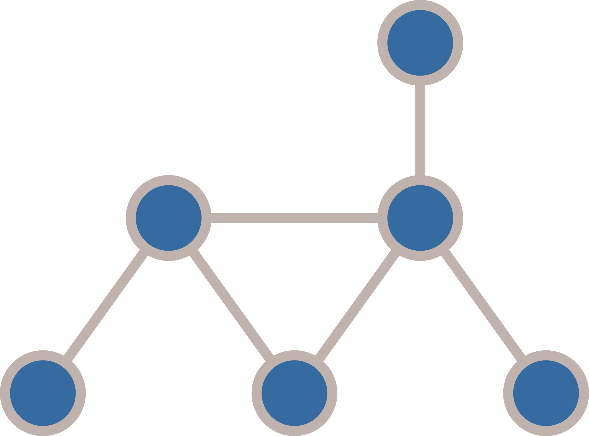
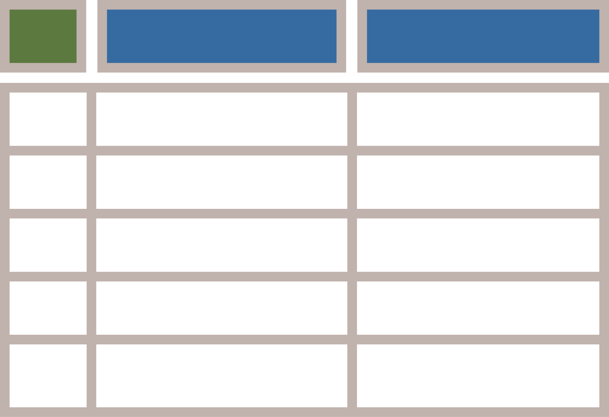
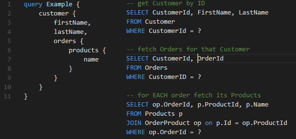
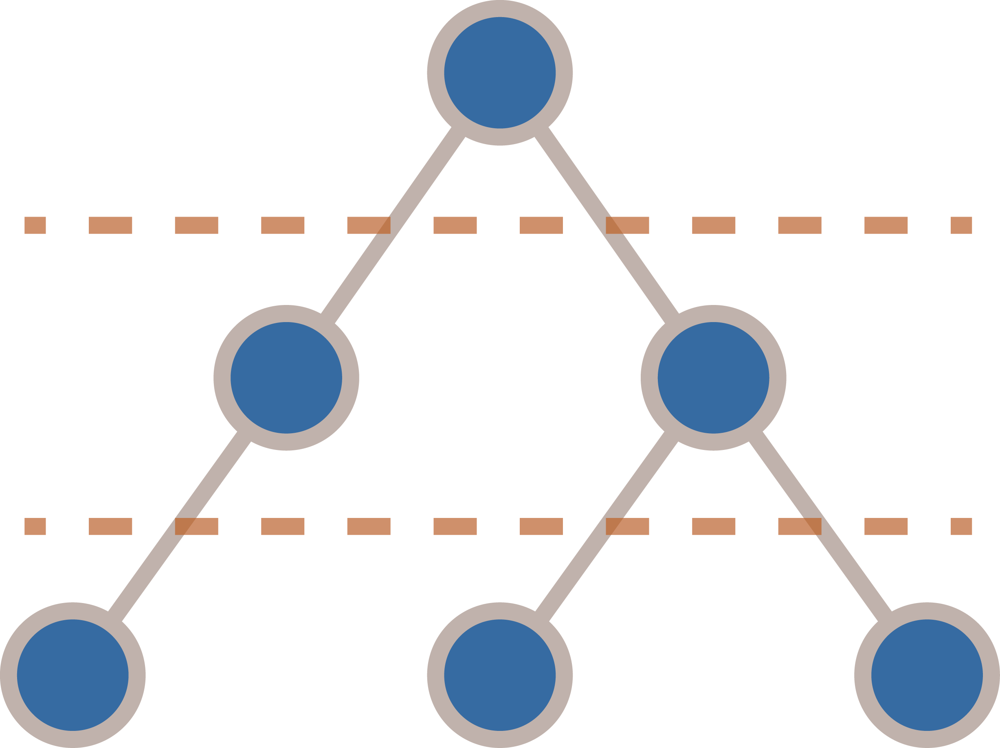
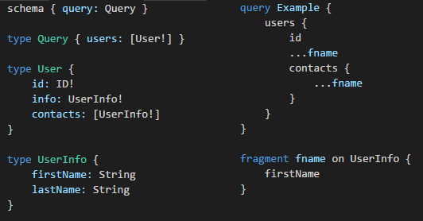
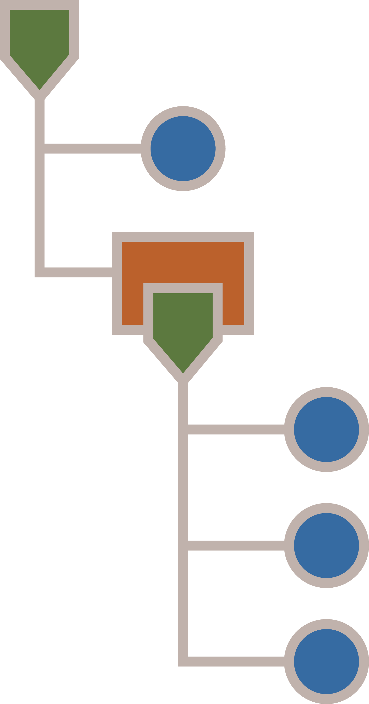

GraphQL
Rest API 2.0?
Agenda
- REST API: any problems?
-
What is GraphQL?
- Specification
- Tooling
-
What is FSharp.Data.GraphQL?
- Demo
- Lessons learned
- Post mortem: RelayJS
RESTful API
Common problems:
- What is REST? (baby don't hurt me)
- Tied to HTTP request-response model
- Over- and underfetching
"Rules" of REST
What if someone doesn't give a shit?
Tied to HTTP request/response
Which HTTP verb will you use for create request over web sockets? XD
Over- and underfetching
When you need a little more or a little less.
What is GraphQL?
Standard for application-level query language invented by Facebook.

It's cross-platform
- FSharp.Data.GraphQL (F#)
- graphql-js (JavaScript)
- graphql-ruby (Ruby)
- graphql-php (PHP)
- graphql-go (Go)
- graphql-net, graphql-dotnet (C#)
- graphql-java (Java)
- graphene (Python)
- Sangria (Scala)
- absinthe (Elixir)
- PostGraphQL (PostgreSQL)
- graphql-lua (Lua)
- graphql-haskell (Haskell)
- graphql-clj (Clojure)
What does it look like?
 |
 |
It's statically typed
Schema notation:
1: 2: 3: 4: 5: 6: 7: 8: 9: 10: 11: 12: 13: 14: 15: 16: 17: 18: |
|
Type system
- Scalars
- Enums
- Objects
- Interfaces
- Unions
- InputObjects
- Lists / NonNulls
Directives:
- @skip
- @include
- and more...
Introspection
Ability to retrieve an information about your schema by using GraphQL itself.
1: 2: 3: 4: 5: 6: 7: 8: 9: 10: 11: 12: 13: |
|
(Excelent for tooling)
FSharp.Data.GraphQL
F# implementation of GraphQL standard for client and server.
1: 2: 3: 4: 5: 6: 7: 8: 9: 10: 11: 12: 13: 14: |
|
It's like a language
- Compilation
- Planning
- Execution
It all comes with a cost...
- Development speed over machine speed
- Joins over aggregations
- Dynamic queries can lead to N+1 SELECTs
- Big responses
Joins vs aggregations
Good |
Bad |
|---|---|
 |
 |
N+1 SELECT problem in GraphQL
|  |  |
Batched responses can get quite big
- How to chunk big responses?
- How to block oversized queries?
Discoveries down the road
What approaches did we use to address problems we've met?
AsyncVal
Uniform API to work with both sync/async computations:
1: 2: 3: 4: 5: 6: 7: |
|
Fast, low overhead in synchronous cases:
- ~3000 times faster than async.Return
- No extra heap allocations!
Execution plan
Know what's going to be executed before executing it.
 
Property tracker
Know what's going to be accessed before accessing it.
Execution plan infers usage of objects and fields defined GraphQL schema
Property tracker infers usage of .NET objects and properties directly from the code before it executes
Future plans
- Partial responses (@defer directive)
- Subscriptions
- Query complexity analysis
- IL code emitter
(Keep track of improvements on github)
End
References:
- GraphQL quickstart: http://graphql.org/learn/
- Project site: http://bazingatechnologies.github.io/FSharp.Data.GraphQL/
- Apollo stack: http://www.apollostack.com/
- RelayJS - client-side data layer: https://facebook.github.io/relay/